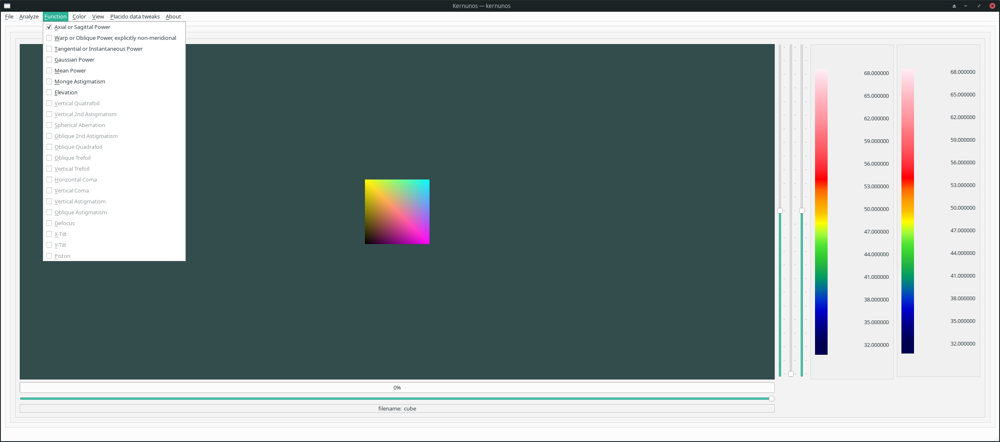

The Function menu allows you to pick which function to show in the central (main window). As with Color, if Auto Redraw is not set in in the View Menu, you will have to select Redraw in the File Menu.

See also: Open File, Export, Export, README, FAQ, File Menu